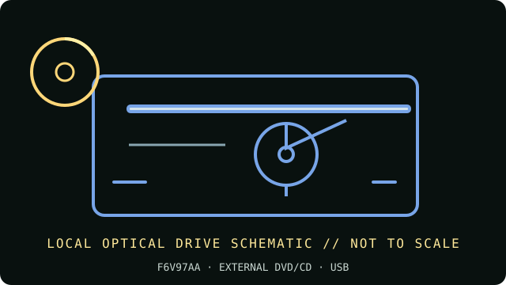

[ INDIVIDUAL COMPONENT // OPTICAL DRIVES ]
HP USB External DVDRW Drive F6V97AA
HP USB External DVDRW Drive, retail SKU F6V97AA. HP also uses a product-family name in regional support systems; check the product number and matching HP manual, not just the generic “USB DVD” label.

IDENTIFICATION: HP F6V97AA · Match the complete label, service code and manual revision before relying on a feature or installing firmware.
Verified specifications
| Catalog subcategory | External DVD writers |
|---|---|
| Exact product identifier | HP F6V97AA |
| Supported DVD/CD formats | Reads/writes CD-R/RW, DVD±R/RW and dual-layer DVD±R DL. HP’s model documentation does not establish DVD-RAM or M-DISC support; do not assume either. |
| DVD read/write speeds | DVD write up to 8×; reads DVD media up to 8×. Use media-specific speed limits from HP’s manual rather than expecting every blank disc to burn at the maximum rate. |
| CD read/write speeds | CD write up to 24×; reads CD media up to 24×. |
| USB interface and power | External USB 2.0, compatible with USB 3.0/3.1 host ports but still limited to its USB 2.0 link. USB bus-powered, supplied USB-A cable; no separate AC adapter normally required. |
| Compatibility, software and caveats | HP lists Windows, Mac OS X and Chrome OS generations, but bundled playback/authoring software and OS support depend on release. Current systems may provide basic USB mass-storage/optical access while needing separate licensed video-playback or burning software. |
Use and preservation notes
- Close the tray and keep the drive level during operation; do not disconnect or remove a disc during an active write.
- Use known-good media and a conservative supported speed for archival copies. Finalize as appropriate and read back the disc; retain a checksum and log drive model, firmware, software, media ID and errors.
- Store optical media in protective cases away from heat, direct light, humidity, scratches and adhesive labels. Keep more than one verified copy.
Manufacturer and manual sources
- HP — USB External DVDRW Drive product pageHP manufacturer product details and headline recording speeds.
- HP Support — USB External DVDRW Drive specificationsManufacturer support specification page for this drive family and product number.
Advertised maxima are media-dependent drive ratings, not guarantees of a successful burn or recovery from damaged/aged media. Exact host and software support can change by region and operating-system release.